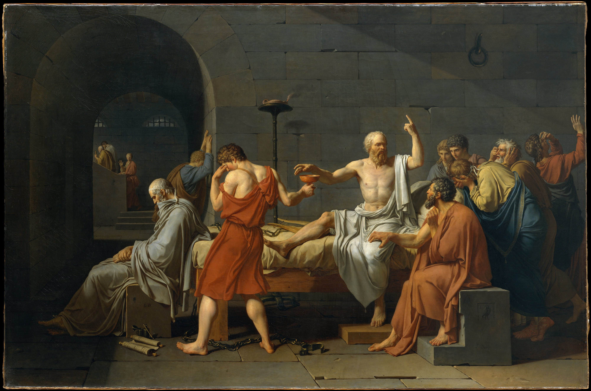
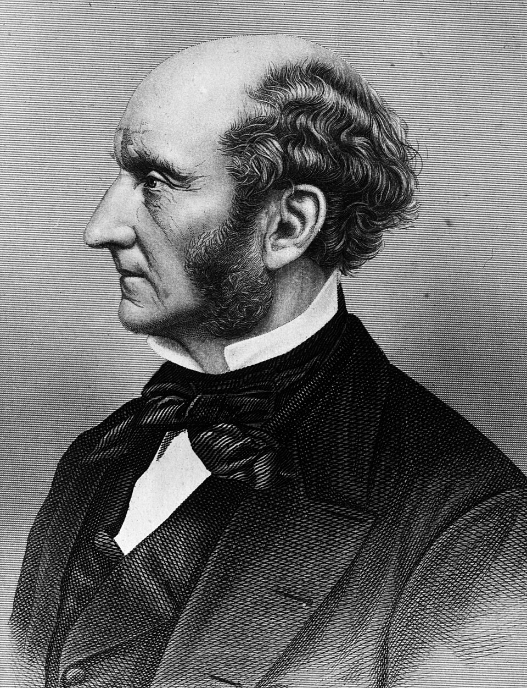

I / Research question
Does every citizen deserve equal political authority?
Should political competence matter when citizens exercise power over others?
The Paradox of Democracy · ENGL C1000Explore the research
II / First source · Jason Brennan
The Right to a Competent Electorate
Political equality does not guarantee political competence.
“Citizens have a right that any political power held over them should be exercised by competent people in a competent way.”
Brennan, The Philosophical Quarterly, 2011, p. 700Democracy
Equal voting rights
Epistocracy
Political authority distributed according to knowledge or competence
III / Counterargument · John Stuart Mill
On Liberty
“tyranny of the prevailing opinion and feeling”
Mill warns that dominant opinions can suppress independent thought. Applied to epistocracy: who decides what counts as political competence?
Mill, On Liberty, 1859, ch. 1 · Application to Brennan is the essay’s analysis.
IV / What I learned
Competence without exclusion.
Political incompetence threatens democratic freedom.
What complicated itCompetence-based voting restrictions can also enable oppression.
Revised positionPreserve universal suffrage while strengthening civic education and constitutional safeguards.